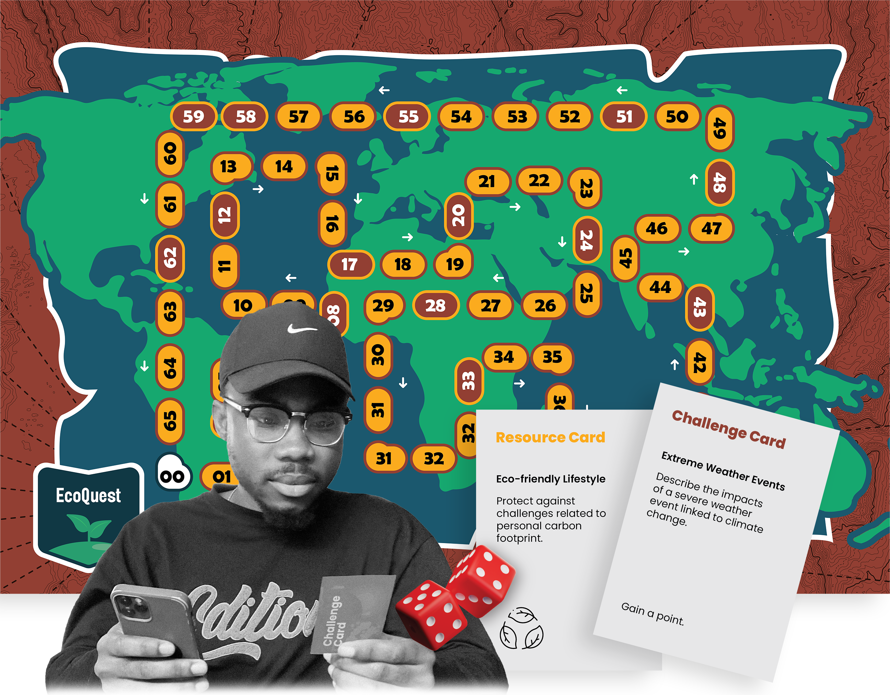

A Board Game Approach to Climate Change Education and Advocacy
Objective: Educate and inspire action on climate change through gamification.
Methodology: Qualitative assessment of game effectiveness through pre- and post-gameplay questionnaires and ethnographic observations.
Players move tokens across the board, answering challenge questions and earning points. They encounter opportunities to draw Resource Cards for advantages. Negative Point cards deduct points for certain actions.
Qualitative approach with pre- and post-gameplay interviews. Data collected on players' understanding of climate change and motivation for action.
Players suggested clearer instructions, more practical challenge questions, and a simplified answer system. Positive feedback on the game's thought-provoking and educational aspects was received.
Players demonstrated enhanced understanding of climate change concepts and increased motivation for action after playing EcoQuest.
| Participant | Before Gameplay: Understanding of Climate Change | After Gameplay: Understanding of Climate Change | After Gameplay: Motivation to Take Action |
|---|---|---|---|
| P1 | Basic, concerns about environmental degradation | Expanded, gained insights into global initiatives and interconnectedness of climate issues | Significant increase, inspired to advocate for policy changes and engage in community initiatives |
| P2 | Basic, focuses on pollution and environmental degradation | Deepened, particularly regarding impacts on vulnerable communities and international agreements | Slight increase, inspired to advocate for policy changes and engage in community initiatives |
| P3 | Nuanced, includes sustainability and greenhouse gas emissions | Enhanced, gained deeper understanding of climate science and renewable energy solutions | Moderate increase, committed to making personal lifestyle changes and supporting sustainable businesses |
| P4 | Limited, focuses on pollution and environmental degradation | Broadened, learned about climate justice and social equity aspects | Slight increase, recognizes the importance of individual actions and pledges to advocate for climate action |
| P5 | Broad, includes sustainability and future impacts | Enriched, particularly regarding climate resilience and adaptation strategies | Significant increase, motivated to mobilize peers and participate in climate activism |
| P6 | Broad, focuses on environmental degradation and future impacts | Enriched, gained insights into climate policy and global cooperation | Moderate increase, plans to integrate climate action into professional and personal spheres |
EcoQuest offers a promising approach to climate change education and advocacy through gamification. Future iterations can benefit from addressing feedback and expanding research efforts.